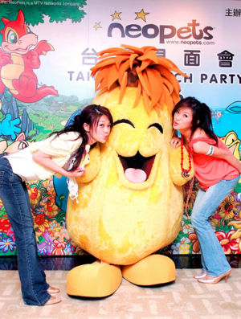

Neopets
 De: La Frikipedia, la enciclopedia extremadamente seria.
De: La Frikipedia, la enciclopedia extremadamente seria.
¿Qué mierda es neopets?

Este es el ejemplo de un chico aficionado de neopets. "Abraza a los wombats sin temor
Puede que no estes familiarizado con este término (no es para preocuparse). También llamado Necrofiliapets'.
Neopets, etimologicamente NEO= nuevo, PETS= wombats en gringo, es un juego zoofilico de mascotas virtuales en internet. El sitio fue abierto al público en el año 1000 a.c fundado por las fuerzas del mal, aunque también se le atribulle la invención a los Psyduck y luego fue comprado por barney poco después de haber sido creado. Actualmente es utilizado para reclutar a los niños y tranformarlos en la futura generacion de Power Rangers utilizando metodos geneticos del mal.
Dominar el mundo
-El imperio Neopets tiene como objetivo dominar el mundo haciendo que los niños no vayan al escuela y esten todo el dia cuidando a su neopetsque en realidad son prototipos geneticos del wombats. Unos Neopets muy reconocidos son Pinky y Cerebro los cuales abandonaron la industria cuando barney los obligo a prostituirse, pero aun asi continuan con sus ideales de conquistar el mundo.
Acabar con la humanidad
Acaparando la atencion de las niñas y transformando a los niños en futuros homosexuales para asi evitar que los humanos se reproduzcan y acabar con la especie, un claro ejemplo de esto es El Guason(Se dice que este una vez fue un niño inocentes, pero que tras recibir la maxima capacidad de Neopets y estar mas de 24 horas conectado se transformo en un ser maligno dispuesto a destruir a Batman y a la gente de Ciudad Gotica porque siempre le ganan obteniendo los regalos en el arbol de la fortuna[un arbol que regala desde vomitos hasta sudor de Bruce Lee gratis y violar a Robin y convertirlo en una nueva clase de Neopet.
Como nacen los Neopets
Debido a que los neopets intentan alejar a toda costa el pensamiento de la reproducción en humanos estos salen de agujeros en la tierra y todos son hombres.
Propósitos ocultos
Niño que juega en neopets. Se puede apreciar que tiene un wombat en su manos.
Aunque muchas personas lo nieguen neopets tiene propósitos ocultos, entre ellos elmás importante: Con Tomiow como espía, ver el punto débil de habbo. He aquí una lista de los otros pocos que han sido detectados.
- Crear un Neopet tan fuerte como Rambo.
- Destruir a Monesvol desde adentro.
- Evadir la realidad.
- Convertir a los niños en homosexuales.
- Hacer dinero.
- Medir tu coeficiente intelectual.
- Hacer mas dinero.
- Hacer creer que todo esto existe.
- Que dejes la escuela.
- Hacerte mas ignorante.
- Que mojes la cama si no tienes un bruce de peluche contigo en las noches.
- Que pierdas tu vida social.
- Que no te reproduzcas
- Manipular tu pensamiento.
- Hacerte creer que Paty Chapoy es una persona con voz encantadora.
- Ver que tan estúpido eres.
- Hacer pensar que lo wombats no existen.
- Lavarte el cerebro para poder convertirte en un ñoño.
- Tratar de que creas que todo lo que haces esta mal y debas acariciar mas seguido a tu Neopet porque se siente solo.
- Doninar el mundo.
- Que quieras tener relaciones
sexuales intimas con tu neopet para que este más feliz...
- Obligarte a escuchar RBD.
- Hacerte creer que panda es rock y evanece metal.
- Hacer que veas a adame powers como un dios.
- Darle competencia a los chupamons.
- Hacerte ovidar el you tube por la neovision.
- cambiarte tu muñeco de naruto por un chia.
- Que empieces a usar expresiones como: "te voy a chiar".
- Que pases las 29 horas al día para tener millones de
neoputas neopuntos
- Destruir a godzilla
- Volver mierda tu léxico
- Hacer que todas las niñas se crean vampiresas y se acuesten con bill gates
- Atracción sexual hacia los Peces gatos
El juego
El juego sólo consiste en juntar cosas las que la mayoria no sirven para nada solo para darselas a tu Neopet(los cuales son un agujero negro de puro consumismo aun no se sabe a donde van a parar todos los juguetes, alimentos y objetos absurdos que le das a tu neopet ya que nisiquiera defecan, muchas teorias afirman que en estos objetos trafican droga) fué hasta que godzilla descubrió esta conspiración y destruyó la página, que rápidamente reconstruyo Bill Gates ya que no podia vivir sin su Acara y su Uni.
Personajes
 Los neopets son muy activos sexualmente
- Uni:Un Unicornio Pony, se dice que es el neopet mas peligroso y los que tienen una vida sexual mas activa debido a que todos son hombres su metodo consiste en el sexo cuerno-anal.
Por otra parte se dice que estan entrenados para hacer magnifico sexo oral.
Una de la leyendas urbanas señalan que cuando llegue el apocalypsis ellos estarán ahí.
Se dice que Fox posee una extensa coleccion de unis en su rancho en Fairytopia en BarbieLandia.
- Acara:Mutación entre gato montes, peluca barata y prostituta cara. Este extraño y patético neopet se caracteriza por hacer shows tremendamente sexuales por unos cuantos neopuntos. Se dice que en es dependiente del extasis por naturaleza. Versiones científicas señalan que si Acara fuese un humano sería parecido a Paris Hilton.
- Aisha:Tutsi pop modificada, un experimento del Sr. Buho/Nazi y Bob el constructor, quienes tenían cierto gusto enfermizo por las asiaticas. Una de las caracteristicas de este espécimen es que tiene los órganos reproductores en colgando de su cabeza. La mayor parte del tiempo se le puede encontrar trabajando de medio tiempo en chillis.
- Blumaroo:Simpático neopet con fuertes tendencias sexual-anales y con su singular naris tipo pene . Entre todos lo pets este es el más enfermo, se dice que practica sexo con cadaveres de chias. Los obliga a jugar una partida de dados y cuando menos se lo esperan terminan en una bolsa negra. Cabe destacar que el Team Neopet niega esto, dicen que solo es un invento de unos jóvenes ociosos y que los Chias de las bolsas no estan muertos.
- Bruce:Se dice que son parientes de los pinguinos homosexuales tan famosos en el mundo real, estos fueron creados especialmente por Bill Gates para complacer su gusto zoofilicos por los pinguinos ya que no querian venderle a los 2 pinguinos homosexuales reales este decidio crear los suyos propios.
- Bori:Este antes de ser un pet fue un juego mecánico de farmacia que funciona con $5. Cansado de que niños molestos con olores desagradables se subieran a el, cobró vida gracias al Dr. Simi (vease degenerado sexual). Se rumora que también es una de las variantes del wombat, tiene la capacidad provocarse el vómito y lanzar acido corrosivo de este modo.
- Gelert:Nació despues de que un perro y un conejo
tuvieron sexo se hicieron amigos intimos. Generalmente esta sacando la lengua mirando a una de las Neoputas.
- Gnorbu:Principal aliado de Osama Bin Laden, este pet defeca petróleo de ahí la fama de medio oriente. Por sus fosas nasales lanza proyectiles al más puro estilo Mario Bros. Su piel se usa como abrigo en las zonas articas.
- Techno:Lagartija chaquetera aborto de Barney al crusarse con un Fruit loop. Esta extra especie pude llegar a padece de ceguera crónica a causa de su fijación innata por ser bañados en jugos corporales propios del techno llamado también techno semen. Cabe mencionar que son hemafroditas.
- Scorchio:Mascota que se mudo a neopets por causas de que cerraron Reino Aventura ya que no pudo ser contratado en six flags por ser acusado de acoso sexual que ahora se la pasa corcheando en el Puticlub de el País de las Zorras.
- Kougra:Son leopardos no gays adiferencia de todo en neopets al contrario de todos los demas estos no nacieron en neopets y no decidieron ser clientes frecuentes del puticlub de las Xweetoks hasta que la ausencia de hembras no lesvianas los obligo a esto, se dice que eran un grupo de colegas leopardos comunes que decidieron tomar un crucero, pero Bill Gates deseba introducirlos en su coleccion de Neopets por lo cual extermino a todos los pasajeros de su crucero y introdujo en el neopets y las aferraciones homosexuales mas cursis que pueden existir como las peliculas de Barbie, pcs que solo abrian la pagina de neopets, noche de locas y en el teatro cantaba en Vivo Michael Jackson y Village People, apenas lograron escapar un un bote hasta que por ultimo estrello el bote en la isla Neopets encerrandolos en esta.
- Kyiri:Ratas del tamaño de sandias, que les chupan el aliento a los niños. Aparentemente es un tierno neopet, pero en el fondo se mete a tus sueños y te hace tener las peores pesadillas.
- Xweetok:Dícese de ese bicho con una melena con la que llega a rascarse el culo y que puede escalar paredes y muros solo con pensarlo, estos bichos son muy agresivos con los kougras, pues la gran mayoria son hembras (a los machos se los follaron los blumaroo dejándolos pa el arrastre)
- Hissi:Es otro grán desconozido de la fauna que normalmente se come a otros de otra especie, es una culebrita con alas que no vuela a más de 2 pies, son gran aliados con los wombats, esos sarcásticos asesinos despiadados. La principal arma de un hissi es la intimidación y pronunciar con mariconeo su nombre, se dice que Chuk Norris casi muere por un ataque de hissi.
(adventencia para los niños) Siempre antes de dormir,miren debajo de su cama, quien sabe lo que podeis encontrar...
- Krawk:Este bicho con cara andrajosa y nariz de pollo, se le considera el mayor marginado del mundo neopiano, pues no sale de la cueva de los hongos. Por salir, ni del armario salen. Algunos dicen que son adorablemente monos, pero lo que no saben es que provocan (favorecen) la salida de arrugas, verrugas, tifus, catarro, esguinze de frenillo, esquince cerebral, y demas dolencias capilares.
- Zafara:No se sabe como, siempre estan alegres los muy cabrones, a pesar de que siempre les quitan la piel a tiras para hacer chalecos y bolsos que siempre se venden en el mercado ilegal. Estos bichos tienen el poder de hacer desaparecer a los Krawks metiéndoles la cola por el culo. ese líquido misterioso se compra en los chinos.
- Grarrl o Grarruggg o cómo mierda se diga:Son otro de los animales no gays que Bill Gates trajo a su colección. Estos animales son un tipo de Dinosaurio con ojos verdes por que están drogados. Se dice que por las noches escuchan Heavy Metal mientras beben cerveza.
Los neoforos
Ahhh... si los neoforos lo único bueno de neopets, aunque no lo sepas un foro es como una tribu urbana, aqui mencionaremos cada tipo de foro:
- Foro 7: El foro de los eventos, normalmente ahi unos spammers por alli que se creen lo más guay del mundo por ser spammers, también nunca faltan los que hacen preguntas bobas relacionadas con el evento
- Anuncios de Tiendas: Sin duda el foro más odiado, aqui habitan unos robots que tienen mensajes automatico que dicen "Comprenme, aprovecha super oferta!!" "Comprenme o mato al gatito" y puras pendejadas, no saben decir otra cosa, más encima nadie les compra.
- Asociaciones: Foro parecido al anterior solo que se la pasan anunciando sus asosiaciones, y la mayoria son de My Little Pony, duh....
- Avatares / Neofirmas: "Lend mi miau" "Califico Cosos" "Chat & Kadoties & Rese" "¡Ha Ocurrido Algo! #458" son algunos de los mensajes de este foro, normalmente los habitantes de este lugar no hablan bien español y por eso quisieron aprender inglés que español y se la pasan diciendo cosas en inglés y abreviaciones en ingles
que no se lo entienden ni ellos, bueno GL con tu vida
- Ayuda: Simplemente, no ayudan en nada, te denuncian hasta por respirar, y como se creen tus padres/tutores te corrigen hasta las comas (Uuuuugh). Tambien te denuncian si no dices por favor y su carita nativa es el: *unsure*.
- Busqueda de llaves: En pocas palabras: Solo sirve para acosar
sepsualmente a los que se salen del juego sin dejar ganar al otro.
- Busquedas: Te sirve para encontrar los objetos que te piden las hadas
a cambio de sexo
- Centro de
Neodinero Cagado NC: Por el amor de Mr. Krughithenizather, nunca te metas a este foro, solo habitan los tipicos usuarios premium con su tipico Draik, y su font megachula, que solo gastan su dinero en un par de pixeles, no los toques, o se te contagiara la estupidez.
- Centro de Adopción: Aquí puedes traficar ilegalmente neopets, y como la mayoria son NeoRacistas, no se permiten los neopets básicos.
- Clubs de Fans: Aquí puedes hablar de todo lo que seas fan, menos de neopets (aunque TNT diga lo contrario, pero como nadie le hace caso a este par de tacaños...) también te puedes pelear con las
descerebradas fangirls de My Little Pony y Los Jonas Brothers que obviamente le hacen un honor al rock.
- Concurso de Belleza: Aqui puedes anunciar tu dibujo de tu neopet y como todos
se exitaran al verlo apreciaran tu obra maestra, votaran sin tener más opción.
Wall Street Consejos para la Bolsa: "Las acciones de la FSH bajaron un 100%, ¡ESTAMOS EN QUIEBRA CABRONES!" ; "Como podrán ver en este gráfico, las acciones aumentaron un 1,32% comparado con el mes anterior, y si seguimos asi, gastaremos todas nuestras ganancias en Porno" ; Entre otros topics más, aquí estan los que tratan de ganarse NeoDolares a traves de empresas virtuales (cuando podrían dedicarse a ganar dinero real de la misma forma, duh).
Super Smash Bros Duelódromo: Aqui si tu neopet se cree el rey de todos los terrenos, puedes retar a otros pets mediante una pelea amistosa a morir con metralletas y AK-97´s.
- Escritores Neopianos: Aqui puedes leer todas las obras, poemas y novelas de los más grandes escritores, pero este foro esta más muerto que la generosidad de TNT porque a todo el mundo le da flojera leer.
- Estrellados y Gay-lerias: Aquí puedes exhibir tu más hermosa colección de varios objetos con un tema en específico... cuando de pronto descubres que hay un mismo cabrón que te copio el tema, D´oh.
- Ideas/Sugerecias:
Foro que no sirve para nada Aquí puedes anunciar tus mejores ideas para mejorar Neopets (y asi colaborar con su plan maligno de Dominar el Mundo) aunque ten cuidado con tus ideas porque nunca falta los criticones que te humillan hasta más no poder (Véase Foro 5).
- Intercambios/Subastas: La misma
weá tontería que el Foro de Tiendas, pero como TNT no sabe fusionar los foros mediante la tecnica de Dragon Ball, quedan separados no más.
Foro de Juegos Discución de la existencia del Mundo de Gelatina: Aqui se supone que deberíamos comentar sobre juegos, pero el impacto popular del Mundo de Gelatina es tan Shockiante, que los n00bs que creen en el mundo de gelatina pelean contra zeyer_9 los no-creyentes (y asi dice TNT que esta prohibido hablar de NeoPolitica, duh.)
Novatos Foro de cualquier weá existente en esta weá de mundo, de la weá de universo y toda la weá de demás: Este es el foro donde reina el spam (Lamentablemente, no es el Spam del bueno). aqui te mencionaremos un par de topics "Ando Aburrido" ; "Sigo Aburrido" ; "Me Sigo Aburriendo" ; "¡OMG! Mis padres me llevarán a DisneyLandia ¡Siii! ¡No más aburrimiento!" ; "Puta la weá Mis padres cancelaron la weá de viaje, porque la weona de mi hermana tuvo un embarazo no deseado, me quiero suicidar, por la *chia*" también hay otros topics como "RP: The Moonshine is vack - Edicion: Deja de explotar los topics Kami e.e" ; ";) SEXO MANDEN NM :*" ; "Xat de Petz" ; "Chat de Ediciones #3 - Edicion: edicion: edicion especial : EDICIONAME ESTÁ" ; "Contemos Historias de Terror mientras nos dan orgasmos al ver a Tails Doll", en resumen, el foro más pendejo de todos.
- Personalización: Aqui puedes calificar a otro Neopets y te pueden calificar el tuyo,
ah, y también te puedes violar a los NEOMODERNOS y los de la FASHION CLUB
- Mundo de Gelatina:
Otro foro de Spam Foro donde puedes conversar sobre este inexistente mundo, lamentablemente, para crear un tema aquí debes ser un juanker profesional, porque se nesecita un codigo secreto, que ahora todo el mundo sabe gracias a la Kiwipedia.
- Foro de administración de calamidades: Aqui solo puede entrar
George Bush y Chavez TNT, a si que cagaste si querias investigar sobre el gobierno.
Conclusión: Esta información solo la entenderas si eres un neoforero, pero que más da...
Tipos de usuarios de Neopets
He aquí una breve lista de los tipos de usuarios que te encontraras si visitas los foros, pero esto no es recomendable pues podrias volverte uno de ellos:
- Neopiano= Instrumento de música, persona sin vida que juega en neopets por lo general tiene uno o varios trofeo.
- Neoamigo= Persona que te habla solo para pedirte cosas, solo te saluda 1 vez cada 4 años.
- Neonovio= Persona deseperada por contacto humano sin vida social.
- Neopajiador= usuario que suele masturbarse viendo las imagenes de las
zorras hadas
- Neoputa= Persona que le pagas neopuntos por sus servicios.
- Neoemo= Todo aquel con "dark", "666", "doom", por lo general son señores violados en su infancia.
- Neootaku= Mujeres y hombres de 36 años que viven en el sótano de sus padres, por lo general son fans de naruto e inuyasha.
- Neorocker= Alquel que solo oye a HIM, KORN y Evanescence, suelen ser fresas de closet por cualquier cosa se enojan y maneja un lenguaje desconocido: .... p.*.t.o, $#"%@, ****.
- Neofresa= Tipíca princesa disney que se la pasa diciendole a todo el mundo su extenso diccionario: nub, nubo, n00b, n00b, nabo y otros tuberculos, por lo general terminan de meseras en mcdonalds y trabajando en wartmart. También se creen las reinas de neopets y tienen entre 11651651213196549842 a 98987465465146549798745645 cuentas congeladas.
- Neopervertido= Niño de 13 años que se hace pasar por uno de 24, suele reconocerse por las quemaduras de tercer grado en sus manos.
- Neo-te-digo-cosas-inutiles-en-los-foros= Todo aquel sin autoestima que crea topics inutiles, los más destacados son: "busco neomigos", "a quien le caigo mal", "amor", "no tengo pija", "odio a barney", "soy elmo", "se mi novia", "vamos a poncearnos" suelen ser la primera contradigievolución de los pibes-sin-vida-social-vivo-bajo-un-puente o a veces de los solo-existe-mi-pequeño-mundo-y-yo.
- Neogamer= Un usuario extraño es el mayor freak que existe en neopets por tener todos los trofeos, todos los objetos, etc... Suelen no tener vida, se cree que son invenciones de matrix, algunos se vuelven famosos, como "aquel chico japones, koreano, chino, que se muere jugando", son tan buenos jugadores que ya saben como inseminar a sus neopets.
- Neohacker= El tipico usuario que roba cuentas, se cree en un mito urbano que solo es Jack Bauer desconectando a los niños de las fuerzas del mal.
- NeoxD= Es aquel que solo escribe utilizando, 1313, xD, =), xS, x3, etc...
- Neoestúpido= aquel que no sabe escribir tiene la misma educacion que George W. Bush. asta aki sta y cree que mexico es un país bien gobernado.
- Neofan= Sólo hace topics dedicados a un tema en especial, casi siempre sobre harry potter y sus tendencias homosexuales, cuando a este especimen se le contesta mal suele ir llorando con chabelo.
- Neozoofilia= Un neopet teniendo sexo con un pokémon, el resultado de esta unión se cree que es el cazador de cocodrilos.
- Neodios= Adame Poder, otra de las fasetas de Bill Gates.
- Neoreligion= Adorar el sumo poder del wombat pixelado.
- Neoloser= Persona que por lo general posee vida social, no tiene objetos neopianos ni neopuntos. Se le es tratado mal por cualquiera de los antes mencionados por no ser un friki de neopets.
- Neonazi= Ellos dicen ser grupos posteriores a la Segunda Guerra Mundial que continúan apoyando y difundiendo las ideas del nacionalsocialismov (ver skinhead), pero se cree que enrealidad son neopianos antisemitistas.
- Neofilia= Persona que se la pasa chaquetenado con con solo mirar pixeles pintados de fantasmas.
- Neospammer= Persona popular que se gana la vida insultando a todos los tipos de usuarios antes mencionados...se rumora que esta moda la invento chuck norris para hacerle la vida imposible a bill gates y distraer a Mr. T para que no matara a godzilla
- Neon00b=Es la digievolucion del neoloser, usualmente se crean una cuenta y se olvidan de ella asta que pasan sopotroconodoscientos años y se acuerda de que la tenia por alguna casualidad.
- Neovegetal= Persona fisicamente alterada por el doctor black jack asta lograr la apariencia fisica de un vegetal andante, los primeros especimenes fueron los honguitos marrones de mario y el mas reciente "PIT Bananus"
- NeoHeavyMetal=Tiene todas sus pages editables con imagenes de bandas heavymatalicas.
- Neo-Huicholes=Al parecer antes no habia tantos usuarios mexicanos en neopets,
hasta que llego un huichol y empezo cagar a enseñar cultura y artes indigenas a otros usuarios,(particulermente argentinos) es extremadamente mexicano.
- Neocommunist: Tienen con relación al comunismo y al leninismo, por eso, en los foros hay hoz y martillo para ser comunistas, o con sus neopets, se unen a Sendero Luminoso.
- PostData: Se perdieron muchas vidas al entrar a foros algunos no regresaron cuerdos.
Otra PostData: Date cuenta de que toda mierda en neopets empieza por neo...
Mitos
- Se dice que neopets es una página sana controlada de malos temas en foros y que el dinero no puede atelrar el desenpeño del juego.
- También se dice que es una página educativa.
- Un rumor corre sobre que el Dr. simi viene de una familia de chias.
- Algunas versiones señalan que los diseños de los neopets son basados a animales atropellados por Kimi Räikkönen y/o Lindsay Lohan.
- Que TNT es una mafia de monos amaestrados por italinos.
- Que es para niños.
- Que los Kiwipedistas son pro en este juego...se rumora que superan a bill gates.
- Según nuestros informes neopets es una secta donde te obligan a pajeartela mientras miras a tu neopet en el baño
- Las últimas noticias sobre neopets son acojonantes:Niño supuestamente humano muere en sótano trás ser violado por las hadas neoputas
- Que las hadas de cierto pais atraen sexualmente a los frikis
- Que los kougras son animales
como tu homosexuales
- Que todos los que entran son muy felizes
- Que es un portal de transmisión para wombats.
- Que godzilla no pudo contra todos ellos
- Un rumor dice que una vez usaron un neopet en coverfield y los televidentes quedaron traumados
- Se dice que TNT en algun momento tuvo un corazon...pero sabemos que eso es imposible...Bill Gates siempre ha sido una entidad demoniaca dispuesta a pantallarte azuladamente el trasero
- Que Adam Powell y Donna Williams son anunnakis
Lugares
- El valle de las chicas y chicos alegres, donde por solo un doblon puedes obtener desde un hadjobs hasta un bukake, si ya desbloqueaste a lupe fantasma bien que conoces este lugar
- Mundo de gelatina, creada por Dan ùp de fresa, un lugar creado a partir de los desechos toxicos de Dios (los miembros del
Trinitrotolueno TNT quiere meternos en la cabeza que ese mundo no existe, que solo lo vemos grasias a la marihuana. Seguramente estuvieron demasiado tiempo pensando en una forma de Jodernos la vida entretenernos buscando ese mundo)
- Puticlub de el País de las
Zorrashadas:Por solo tu alma y unos cuantos millones de neoputos neopuntos puedes correrte viendo a tu neopet follando juegando con las hadas.
- La isla de krack:Por solo 5 € puedes comprar marihuana online y si tienes mas suerte puedes encontrarte con barney dandola a cambio de una zurrada
- Mundo de los Teletubbies:No entres,y si entras,nunca te agaches delante de Twinky Winky por si acaso...
- Liga pokemon:Aqui les demuestras a los demás que tu wombat es mejor que el de ellos.
- El prostíbulo gay: solo para ti y para TNT que queria ver como te dava un chia por el ano.
- mundo de estiercol: este mundo fué creado por michael jackson al saber que E.T. era cuk norris disfrazado.
- El mundo de yupi: donde te lo pasaran yupi jugando con YUPI al aqui te pillo aqui te
mato Yupi.
- Marasqua: Aqui puedes pescar ilegalmente peces trasnogrificados para venderlos en amazon y en mercadolibre y darle mas dinero a bill gates para asi crear un pantallazo rosita mas
gay yag que el anterior
 Informática Informática
|
Personajes Infames Famosos
Dispositivos de Almacenamiento
|
Autor(es):
- Nexo
- Frikiman
- Roms
- Viento
- Azulejos
- ElInventor
- Van suls
- KidAOnAnalphabetLand
- Toomaaz
- IjGranger
Frikipedia 2005-2016, Licencia
GFDL 1.2 - Extraído por FrikiLeaks